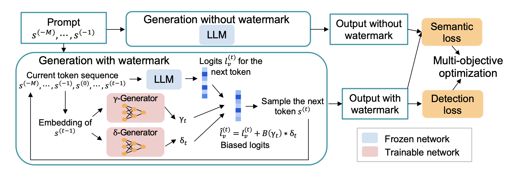

Token-Specific Watermarking with Enhanced Detectability and Semantic Coherence for Large Language Models
International Conference on Machine Learning (ICML), 2024
A multi-objective optimization-based token-specific watermarking method to study and improve both watermark detectability and generation quality.